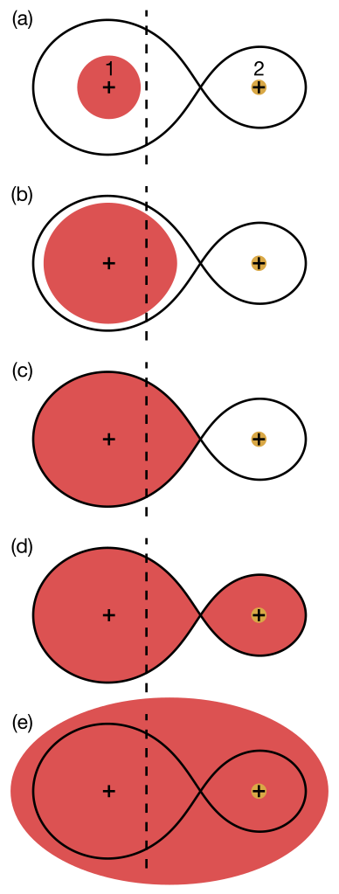

Common envelope evolution and luminous red novae (2024)
 Luminous red novae and their connection to common envelope evolution (CEE) remain elusive in astrophysics. Here, we present a radiation hydrodynamic model capable of simulating the light curves of material ejected during a CEE. For the first time, the radiation hydrodynamic model incorporates complete recombination physics for hydrogen and helium. The radiation hydrodynamic equations are solved with Guangqi. We show that the peaks in the light curves are attributed to radiation-dominated ejecta, while the extended plateaus are produced by matter-dominated ejecta. To fit the light curve of AT 2019zhd, a central mass object of 6 Msun is assumed based on observations and scaling relations. Our model estimates that the ejecta mass of AT 2019zhd falls within the range of 0.04 to 0.1 Msun. Additionally, we demonstrate force acceleration is responsible for driving the ejecta outwards and significantly impact the light curves. Please read this paper for more details.
Asymptotic-giant-branch (AGB) binary evolution (2020)
The interaction of AGB binaries can be intensified by a mechanism called "Wind-Roche-lobe-overflow" and a circumbinary disk.
Many observations imply that circumbinary disks exist around evolved binary systems.
We find that if we take 3D non-local radiative transfer into consideration, a circumbinary disk may form due to the increased optical depth in the equatorial region.
A circumbinary disk can enhance the mass transfer from the AGB star to its companion.
Please read this paper for more details. This paper was featured in the AAS Author series
here.